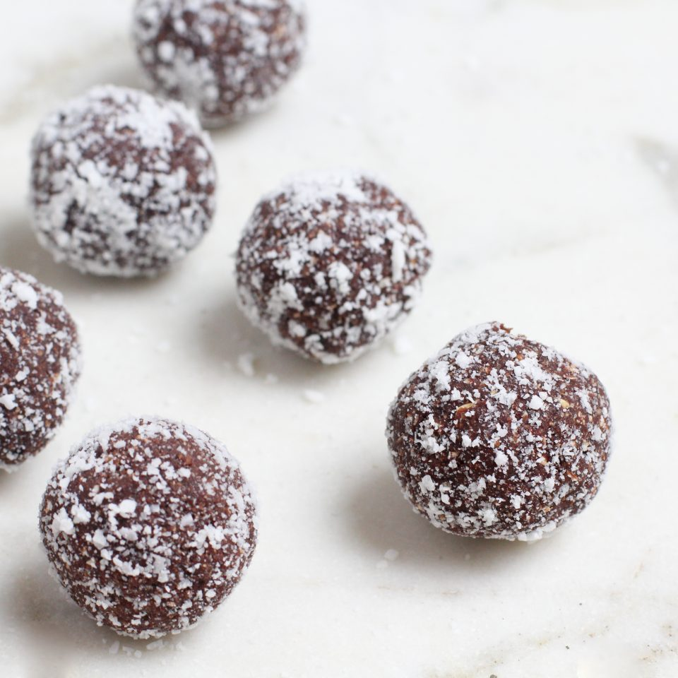

Caramel Cocoa Bites

Description
These are great to curb you dessert cravings. Make two batches and you'll have enough for a week!
Ingredients
- 1/2 cup pitted deglet noor dates
- 1/2 cup rolled oats
- 1/2 teaspoon cinnamon
- 1 1/2 tablespoons unsweetended cocoa powder
Instructions
- Combine the dates, oats, cinnamon, and cocoa powder in a food processor and process until the mixture forms a dough-like texture when pinched together.
If too dry, add more dates. If too gooey, add more oats.
- Roll into 8 balls, and then roll the balls in shredded coconut or hemp seeds to coat.
- Freeze on a lined cookie sheet for 20 minutes before serving. Store leftovers in the fridge or freezer.